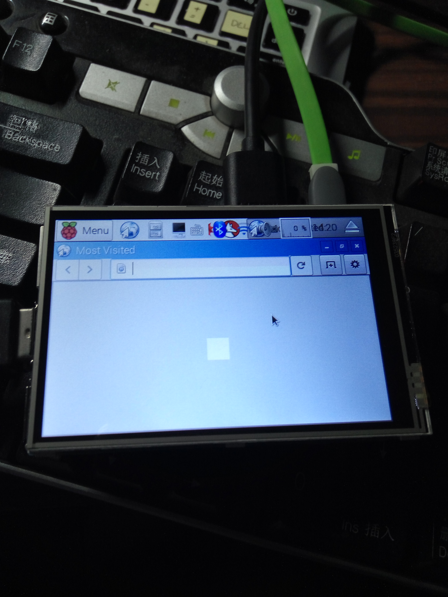

<!DOCTYPE html>
<html>
<head><meta name="generator" content="Hexo 3.9.0">
    <meta charset="utf-8">

    

    
    <title>我的第一个树莓派 | 无聊小博</title>
    
    <meta name="viewport" content="width=device-width, initial-scale=1, maximum-scale=1">
    
        <meta name="keywords" content="树莓派,Raspberry">
    
    <meta name="description" content="组装与插电先来几张图片，其实很早就知道这个玩意了，但是一直也没有啥需求，最近玩了OpenWRT路由器，觉得这种低功耗的玩意，可玩性还是挺高的，并且对Linux系统也慢慢接受了，所以就从淘宝上入了一个3代的。 制作启动盘需要一个TF卡用来刷系统，这玩意本身啥都不带，就是个硬件，所以我找个8G的TF卡刷了一个Raspbian系统，基于DEBIAN的系统。都是LINUX的，下载地址。">
<meta name="keywords" content="树莓派,Raspberry">
<meta property="og:type" content="article">
<meta property="og:title" content="我的第一个树莓派">
<meta property="og:url" content="http://www.wuliaole.com/post/my_first_raspberry_pi/index.html">
<meta property="og:site_name" content="无聊小博">
<meta property="og:description" content="组装与插电先来几张图片，其实很早就知道这个玩意了，但是一直也没有啥需求，最近玩了OpenWRT路由器，觉得这种低功耗的玩意，可玩性还是挺高的，并且对Linux系统也慢慢接受了，所以就从淘宝上入了一个3代的。 制作启动盘需要一个TF卡用来刷系统，这玩意本身啥都不带，就是个硬件，所以我找个8G的TF卡刷了一个Raspbian系统，基于DEBIAN的系统。都是LINUX的，下载地址。">
<meta property="og:locale" content="zh-Hans">
<meta property="og:image" content="http://www.wuliaole.com/post/my_first_raspberry_pi/IMG20160525222224.jpg">
<meta property="og:updated_time" content="2018-10-11T15:31:02.000Z">
<meta name="twitter:card" content="summary">
<meta name="twitter:title" content="我的第一个树莓派">
<meta name="twitter:description" content="组装与插电先来几张图片，其实很早就知道这个玩意了，但是一直也没有啥需求，最近玩了OpenWRT路由器，觉得这种低功耗的玩意，可玩性还是挺高的，并且对Linux系统也慢慢接受了，所以就从淘宝上入了一个3代的。 制作启动盘需要一个TF卡用来刷系统，这玩意本身啥都不带，就是个硬件，所以我找个8G的TF卡刷了一个Raspbian系统，基于DEBIAN的系统。都是LINUX的，下载地址。">
<meta name="twitter:image" content="http://www.wuliaole.com/post/my_first_raspberry_pi/IMG20160525222224.jpg">
    

    
        <link rel="alternate" href="/" title="无聊小博" type="application/atom+xml">
    

    

    <link rel="stylesheet" href="/libs/font-awesome/css/font-awesome.min.css">
    <link rel="stylesheet" href="/libs/titillium-web/styles.css">
    <link rel="stylesheet" href="/libs/source-code-pro/styles.css">

    <link rel="stylesheet" href="/css/style.css">

    <script src="/libs/jquery/3.3.1/jquery.min.js"></script>
    
    
        <link rel="stylesheet" href="/libs/lightgallery/css/lightgallery.min.css">
    
    
        <link rel="stylesheet" href="/libs/justified-gallery/justifiedGallery.min.css">
    
    
        <script type="text/javascript">
(function(i,s,o,g,r,a,m) {i['GoogleAnalyticsObject']=r;i[r]=i[r]||function() {
(i[r].q=i[r].q||[]).push(arguments)},i[r].l=1*new Date();a=s.createElement(o),
m=s.getElementsByTagName(o)[0];a.async=1;a.src=g;m.parentNode.insertBefore(a,m)
})(window,document,'script','//www.google-analytics.com/analytics.js','ga');

ga('create', 'UA-144170558-1', 'auto');
ga('send', 'pageview');

</script>

    
    
        <script>
var _hmt = _hmt || [];
(function() {
  var hm = document.createElement("script");
  hm.src = "//hm.baidu.com/hm.js?0b9af06e21a88c60dc3deb5b699a3e63";
  var s = document.getElementsByTagName("script")[0];
  s.parentNode.insertBefore(hm, s);
})();
</script>

    


</head>
</html>
<body>
    <div id="wrap">
        <header id="header">
    <div id="header-outer" class="outer">
        <div class="container">
            <div class="container-inner">
                <div id="header-title">
                    <h1 class="logo-wrap">
                        <a href="/" class="logo"></a>
                    </h1>
                    
                        <h2 class="subtitle-wrap">
                            <p class="subtitle">Keep sharp</p>
                        </h2>
                    
                </div>
                <div id="header-inner" class="nav-container">
                    <a id="main-nav-toggle" class="nav-icon fa fa-bars"></a>
                    <div class="nav-container-inner">
                        <ul id="main-nav">
                            
                                <li class="main-nav-list-item" >
                                    <a class="main-nav-list-link" href="/">Home</a>
                                </li>
                            
                                        <ul class="main-nav-list"><li class="main-nav-list-item"><a class="main-nav-list-link" href="/categories/CentOS/">CentOS</a></li><li class="main-nav-list-item"><a class="main-nav-list-link" href="/categories/Hexo/">Hexo</a><ul class="main-nav-list-child"><li class="main-nav-list-item"><a class="main-nav-list-link" href="/categories/Hexo/基础/">基础</a></li></ul></li><li class="main-nav-list-item"><a class="main-nav-list-link" href="/categories/Linux/">Linux</a></li><li class="main-nav-list-item"><a class="main-nav-list-link" href="/categories/MacOS/">MacOS</a></li><li class="main-nav-list-item"><a class="main-nav-list-link" href="/categories/折腾/">折腾</a></li><li class="main-nav-list-item"><a class="main-nav-list-link" href="/categories/效率/">效率</a></li><li class="main-nav-list-item"><a class="main-nav-list-link" href="/categories/日常使用/">日常使用</a></li><li class="main-nav-list-item"><a class="main-nav-list-link" href="/categories/raspberry/">树莓派</a><ul class="main-nav-list-child"><li class="main-nav-list-item"><a class="main-nav-list-link" href="/categories/raspberry/入门/">入门</a></li></ul></li><li class="main-nav-list-item"><a class="main-nav-list-link" href="/categories/编程/">编程</a></li></ul>
                                    
                                <li class="main-nav-list-item" >
                                    <a class="main-nav-list-link" href="/about/index.html">About</a>
                                </li>
                            
                        </ul>
                        <nav id="sub-nav">
                            <div id="search-form-wrap">

    <form class="search-form">
        <input type="text" class="ins-search-input search-form-input" placeholder="Search" />
        <button type="submit" class="search-form-submit"></button>
    </form>
    <div class="ins-search">
    <div class="ins-search-mask"></div>
    <div class="ins-search-container">
        <div class="ins-input-wrapper">
            <input type="text" class="ins-search-input" placeholder="Type something..." />
            <span class="ins-close ins-selectable"><i class="fa fa-times-circle"></i></span>
        </div>
        <div class="ins-section-wrapper">
            <div class="ins-section-container"></div>
        </div>
    </div>
</div>
<script>
(function (window) {
    var INSIGHT_CONFIG = {
        TRANSLATION: {
            POSTS: 'Posts',
            PAGES: 'Pages',
            CATEGORIES: 'Categories',
            TAGS: 'Tags',
            UNTITLED: '(Untitled)',
        },
        ROOT_URL: '/',
        CONTENT_URL: '/content.json',
    };
    window.INSIGHT_CONFIG = INSIGHT_CONFIG;
})(window);
</script>
<script src="/js/insight.js"></script>

</div>
                        </nav>
                    </div>
                </div>
            </div>
        </div>
    </div>
</header>
        <div class="container">
            <div class="main-body container-inner">
                <div class="main-body-inner">
                    <section id="main">
                        <div class="main-body-header">
    <h1 class="header">
    
    <a class="page-title-link" href="/categories/raspberry/">树莓派</a><i class="icon fa fa-angle-right"></i><a class="page-title-link" href="/categories/raspberry/入门/">入门</a>
    </h1>
</div>

                        <div class="main-body-content">
                            <article id="post-20160518-我的第一个树莓派" class="article article-single article-type-post" itemscope itemprop="blogPost">
    <div class="article-inner">
        
            <header class="article-header">
                
    
        <h1 class="article-title" itemprop="name">
        我的第一个树莓派
        </h1>
    

            </header>
        
        
            <div class="article-meta">
                
    <div class="article-date">
        <a href="/post/my_first_raspberry_pi/" class="article-date">
            <time datetime="2016-05-18T02:18:39.000Z" itemprop="datePublished">2016-05-18</time>
        </a>
    </div>

		

                
    <div class="article-tag">
        <i class="fa fa-tag"></i>
        <a class="tag-link" href="/tags/Raspberry/">Raspberry</a>, <a class="tag-link" href="/tags/树莓派/">树莓派</a>
    </div>

            </div>
        
        
        <div class="article-entry" itemprop="articleBody">
            <h2 id="组装与插电"><a href="#组装与插电" class="headerlink" title="组装与插电"></a>组装与插电</h2><p>先来几张图片，其实很早就知道这个玩意了，但是一直也没有啥需求，最近玩了OpenWRT路由器，觉得这种低功耗的玩意，可玩性还是挺高的，并且对Linux系统也慢慢接受了，所以就从淘宝上入了一个3代的。</p>
<h2 id="制作启动盘"><a href="#制作启动盘" class="headerlink" title="制作启动盘"></a>制作启动盘</h2><p>需要一个TF卡用来刷系统，这玩意本身啥都不带，就是个硬件，所以我找个8G的TF卡刷了一个Raspbian系统，基于DEBIAN的系统。都是LINUX的，<a href="https://www.raspberrypi.org/downloads/" target="_blank" rel="noopener">下载地址</a>。<a id="more"></a></p>
<h2 id="开机"><a href="#开机" class="headerlink" title="开机"></a>开机</h2><p>插上鼠标，键盘，做好系统后，插入到卡槽中，一通启动，12秒左右，直接进入桌面。</p>
<p>如果用远程链接，用户名是pi，密码是raspberry，记得登录之后，先修改下密码。</p>
<figure class="highlight bash"><table><tr><td class="gutter"><pre><span class="line">1</span><br></pre></td><td class="code"><pre><span class="line">sudo passwd pi <span class="comment">#这里记得一定要带上pi，否则你修改的是root的密码</span></span><br></pre></td></tr></table></figure>

<p>而且这里还有一个步骤，就是运行raspi-config，运行下配置。</p>
<figure class="highlight bash"><table><tr><td class="gutter"><pre><span class="line">1</span><br></pre></td><td class="code"><pre><span class="line"><span class="comment">#raspi-config</span></span><br></pre></td></tr></table></figure>

<p>主要就是选择第一个项目，Expand FileSystem将U盘容量进行拓展，然后重新启动。</p>
<p>然后再次用xshell登录，OK了。</p>
<blockquote>
<p>Linux操作系统是一个多用户操作系统，它允许多个用户登录和使用一台计算机。为了保护计算机（和其他用户的隐私），用户都被限制了能做的事情。</p>
</blockquote>
<blockquote>
<p>大多数用户都允许运行计算机上大部分程序，并且编辑和保存存放在他们自己home目录中的文件。一般用户都不允许编辑其他用户的文件和一些系统文件。然而，在Linux系统上有一个特殊用户叫做超级用户，通常用户名为root。这个超级用户访问计算机没有限制，几乎可以做所有事情。</p>
</blockquote>
<blockquote>
<p>你通常不以root用户登录计算机，但是可以使用sudo命令来获得超级用户权限。如果你登录树莓派使用的是pi用户，那么你就是以普通用户身份登录。你可以在你想要运行的程序之前添加sudo命令来以root用户身份运行程序。</p>
</blockquote>
<blockquote>
<p>例如，如果你想要在树莓派上安装额外的软件，你通常需要使用apt-get工具。为了能够更新可使用的软件列表，你需要在agt-get命令之前添加sudo命令前缀：sudo apt-get update。</p>
</blockquote>
<blockquote>
<p>你同样也可以使用sudo su命令来运行一个超级用户shell终端。一旦以超级用户的身份运行命令，那么就没有什么能够防止造成系统伤害的错误。相当于关闭了机器上的安全防护。虽然这样能够更容易访问系统内部的东西，但是造成损害的风险更大。建议你只在需要超级用户权限的时候以超级用户身份运行命令，在不需要超级用户权限的时候及时退出超级用户shell终端。</p>
</blockquote>
<blockquote>
<p>WHO CAN USE SUDO？（谁可以使用sudo）</p>
</blockquote>
<blockquote>
<p>如果任何用户都能够在命令之前添加sudo，安全性就会遭到破坏，因此只有指定的用户才能使用sudo获取计算机管理员的权限。pi用户已经包含在sudoer文件中。允许其他用户使用超级用户权限，你可以将这些用户添加到sudo分组，或者使用visudo添加他们。</p>
</blockquote>
<p>如果你是用wifi让树莓派上网的，那么启动树莓派上的命令行，输入<figure class="highlight plain"><table><tr><td class="gutter"><pre><span class="line">1</span><br><span class="line">2</span><br><span class="line">3</span><br><span class="line">4</span><br><span class="line">5</span><br><span class="line">6</span><br><span class="line">7</span><br><span class="line">8</span><br><span class="line">9</span><br></pre></td><td class="code"><pre><span class="line"></span><br><span class="line">### 显示中文</span><br><span class="line"></span><br><span class="line">默认系统是不支持中文显示的，所以需要安装中文字体的包。</span><br><span class="line"></span><br><span class="line">``` bash</span><br><span class="line">sudo apt-get update #获取系统更新</span><br><span class="line">sudo apt-get install ttf-wqy-microhei #安装中文字库</span><br><span class="line">sudo dpkg-reconfigure locales #更改系统中的菜单界面</span><br></pre></td></tr></table></figure></p>
<p>用空格键勾选前面带有 “zhCN.UTF-8” 的选项，这些表示是中文字库。（不要选那么多，我自己装了一个zhCN.UTF-8，其他用到的时候再说，而且安装也会慢）</p>
<p>注意第一个界面是安装默认字库，第二个是选择系统显示界面的，最好还是用en来显示，否则连bash提示都是中文，感觉也是没sei了。</p>
<h3 id="中文输入法"><a href="#中文输入法" class="headerlink" title="中文输入法"></a>中文输入法</h3><p>终端下执行命令：</p>
<figure class="highlight bash"><table><tr><td class="gutter"><pre><span class="line">1</span><br></pre></td><td class="code"><pre><span class="line">sudo apt-get install scim-pinyin</span><br></pre></td></tr></table></figure>

<p>我装的时候遇到点问题，只好先卸载了，很简单，install变成remove即可。</p>
<figure class="highlight bash"><table><tr><td class="gutter"><pre><span class="line">1</span><br></pre></td><td class="code"><pre><span class="line">sudo apt-get -y remove scim-pinyin</span><br></pre></td></tr></table></figure>

<p>我最后用的还是google拼音。</p>
<figure class="highlight bash"><table><tr><td class="gutter"><pre><span class="line">1</span><br></pre></td><td class="code"><pre><span class="line">sudo apt-get install fcitx fcitx-googlepinyin</span><br></pre></td></tr></table></figure>

<p>不知道为啥scim-pinyin死活用不了呢，下次再说吧。</p>
<h3 id="开启VNC远程桌面"><a href="#开启VNC远程桌面" class="headerlink" title="开启VNC远程桌面"></a>开启VNC远程桌面</h3><h4 id="安装VNC"><a href="#安装VNC" class="headerlink" title="安装VNC"></a>安装VNC</h4><figure class="highlight bash"><table><tr><td class="gutter"><pre><span class="line">1</span><br></pre></td><td class="code"><pre><span class="line">sudo apt-get install tightvncserver</span><br></pre></td></tr></table></figure>

<h4 id="增加一个桌面"><a href="#增加一个桌面" class="headerlink" title="增加一个桌面"></a>增加一个桌面</h4><figure class="highlight bash"><table><tr><td class="gutter"><pre><span class="line">1</span><br></pre></td><td class="code"><pre><span class="line">tightvncserver <span class="comment">#设置密码，会问你是否只是一个只读链接，我选的N</span></span><br></pre></td></tr></table></figure>

<h4 id="远程连接桌面"><a href="#远程连接桌面" class="headerlink" title="远程连接桌面"></a>远程连接桌面</h4><p>下载VncViewer，<a href="http://www.realvnc.com/download/viewer/" target="_blank" rel="noopener">地址</a></p>
<p>打开程序后连接地址，注意格式是 IP地址:1</p>
<p>我这里输入的是192.168.10.180:1</p>
<p>然后弹出一个提示，意思是数据没有加密之类的。</p>
<p>以后每次想从PC远程使用VNCSERVER的时候，都需要在π上面先启动tightvncsever？这个我还不确定，再说。</p>
<h4 id="关闭桌面"><a href="#关闭桌面" class="headerlink" title="关闭桌面"></a>关闭桌面</h4><figure class="highlight bash"><table><tr><td class="gutter"><pre><span class="line">1</span><br></pre></td><td class="code"><pre><span class="line">vncserver -<span class="built_in">kill</span> :1</span><br></pre></td></tr></table></figure>

<h3 id="加装3-5寸外接触摸屏"><a href="#加装3-5寸外接触摸屏" class="headerlink" title="加装3.5寸外接触摸屏"></a>加装3.5寸外接触摸屏</h3><p>发现购买的3.5寸触摸屏的厂商，貌似在CSDN上有推广的账号？至少在这个<a href="http://blog.csdn.net/huayucong/article/details/49338979" target="_blank" rel="noopener">页面</a>，讲解得非常清楚。</p>
<p>这里是一个<a href="http://www.waveshare.net/wiki/3.5inch-RPi-LCD-A-Video" target="_blank" rel="noopener">youku视频</a>，讲解的很清楚了。</p>
<p>下面的步骤，就是根据这个页面的介绍，结合自己的实际情况总结的。</p>
<figure class="highlight bash"><table><tr><td class="gutter"><pre><span class="line">1</span><br><span class="line">2</span><br><span class="line">3</span><br><span class="line">4</span><br><span class="line">5</span><br><span class="line">6</span><br><span class="line">7</span><br><span class="line">8</span><br></pre></td><td class="code"><pre><span class="line"><span class="built_in">cd</span> /dev</span><br><span class="line">ls <span class="comment">#查看是否有sda1,sda2这样的目录，有就说明U盘插上了</span></span><br><span class="line"><span class="built_in">cd</span> /mnt <span class="comment">#进入挂载目录</span></span><br><span class="line">sudo mkdir udisk1</span><br><span class="line">sudo mount /dev/sda4 /mnt/udisk1</span><br><span class="line">ls <span class="comment">#查看是否有udisk1目录，如果有，就说明挂载成功</span></span><br><span class="line"><span class="built_in">cd</span> udisk1 <span class="comment">#进入udisk1目录，等同于进入了u盘根目录</span></span><br><span class="line">cp LCD-LCD-show-160520.tar.gz ~</span><br></pre></td></tr></table></figure>

<p>这个地方学到了一个TAB技巧，就可以输入文件名的前几个字母，然后按TAB补全文件名。这个步骤是把LCD-show.tar.gz文件复制到主目录。这里我是跟着视频做的，刚开始对这个 ~ 符号有点不理解，视频中说是主目录，我通过输入</p>
<figure class="highlight bash"><table><tr><td class="gutter"><pre><span class="line">1</span><br></pre></td><td class="code"><pre><span class="line"><span class="built_in">cd</span> ~</span><br></pre></td></tr></table></figure>

<p>发现这个目录是我用户名的目录，并不是根目录，学习了。</p>
<figure class="highlight bash"><table><tr><td class="gutter"><pre><span class="line">1</span><br><span class="line">2</span><br><span class="line">3</span><br><span class="line">4</span><br><span class="line">5</span><br><span class="line">6</span><br><span class="line">7</span><br></pre></td><td class="code"><pre><span class="line"><span class="built_in">cd</span> ~ <span class="comment">#进入主目录</span></span><br><span class="line">tar -zxvf LCD-show-160520.tar.gz</span><br><span class="line">sudo umount /mnt/udisk1 <span class="comment">#卸载U盘</span></span><br><span class="line">ls <span class="comment">#查看目录，看看是否存在LCD-show目录，存在则说明解压缩成功</span></span><br><span class="line"><span class="built_in">cd</span> LCD-show</span><br><span class="line">ls <span class="comment">#可以看到多个驱动脚本</span></span><br><span class="line">sudo ./LCD35-show <span class="comment">#这里注意，一定要有./表示当前目录，又是一个知识点</span></span><br></pre></td></tr></table></figure>

<p>然后系统就会重启了。这时候，我发现我的电视，依然继续开机画面，但是到了6-7秒之后，就不继续了，触摸屏开始点亮。</p>
<p></p>
<h2 id="参考资料"><a href="#参考资料" class="headerlink" title="参考资料"></a>参考资料</h2><p><a href="http://blog.csdn.net/xdw1985829/article/details/38779827" target="_blank" rel="noopener">树莓派开发系列教程2——树莓派上手使用</a></p>

        </div>
        <footer class="article-footer">
            


    <a data-url="http://www.wuliaole.com/post/my_first_raspberry_pi/" data-id="cjy9hspwv0020fsok2ipsrpa5" class="article-share-link"><i class="fa fa-share"></i>Share</a>
<script>
    (function ($) {
        $('body').on('click', function() {
            $('.article-share-box.on').removeClass('on');
        }).on('click', '.article-share-link', function(e) {
            e.stopPropagation();

            var $this = $(this),
                url = $this.attr('data-url'),
                encodedUrl = encodeURIComponent(url),
                id = 'article-share-box-' + $this.attr('data-id'),
                offset = $this.offset(),
                box;

            if ($('#' + id).length) {
                box = $('#' + id);

                if (box.hasClass('on')){
                    box.removeClass('on');
                    return;
                }
            } else {
                var html = [
                    '<div id="' + id + '" class="article-share-box">',
                        '<input class="article-share-input" value="' + url + '">',
                        '<div class="article-share-links">',
                            '<a href="https://twitter.com/intent/tweet?url=' + encodedUrl + '" class="article-share-twitter" target="_blank" title="Twitter"></a>',
                            '<a href="https://www.facebook.com/sharer.php?u=' + encodedUrl + '" class="article-share-facebook" target="_blank" title="Facebook"></a>',
                            '<a href="http://pinterest.com/pin/create/button/?url=' + encodedUrl + '" class="article-share-pinterest" target="_blank" title="Pinterest"></a>',
                            '<a href="https://plus.google.com/share?url=' + encodedUrl + '" class="article-share-google" target="_blank" title="Google+"></a>',
                        '</div>',
                    '</div>'
                ].join('');

              box = $(html);

              $('body').append(box);
            }

            $('.article-share-box.on').hide();

            box.css({
                top: offset.top + 25,
                left: offset.left
            }).addClass('on');

        }).on('click', '.article-share-box', function (e) {
            e.stopPropagation();
        }).on('click', '.article-share-box-input', function () {
            $(this).select();
        }).on('click', '.article-share-box-link', function (e) {
            e.preventDefault();
            e.stopPropagation();

            window.open(this.href, 'article-share-box-window-' + Date.now(), 'width=500,height=450');
        });
    })(jQuery);
</script>

        </footer>
    </div>
    <script type="application/ld+json">
    {
        "@context": "https://schema.org",
        "@type": "BlogPosting",
        "author": {
            "@type": "Person",
            "name": "节约用爱"
        },
        "headline": "我的第一个树莓派",
        "image": "http://www.wuliaole.comIMG20160525222224.jpg",
        "keywords": "树莓派 Raspberry",
        "genre": "树莓派 入门",
        "datePublished": "2016-05-18",
        "dateCreated": "2016-05-18",
        "dateModified": "2018-10-11",
        "url": "http://www.wuliaole.com/post/my_first_raspberry_pi/",
        "description": "组装与插电先来几张图片，其实很早就知道这个玩意了，但是一直也没有啥需求，最近玩了OpenWRT路由器，觉得这种低功耗的玩意，可玩性还是挺高的，并且对Linux系统也慢慢接受了，所以就从淘宝上入了一个3代的。
制作启动盘需要一个TF卡用来刷系统，这玩意本身啥都不带，就是个硬件，所以我找个8G的TF卡刷了一个Raspbian系统，基于DEBIAN的系统。都是LINUX的，下载地址。"
        "wordCount": 267
    }
</script>

</article>

    <section id="comments">
    
        
    <div id="disqus_thread">
        <noscript>Please enable JavaScript to view the <a href="//disqus.com/?ref_noscript">comments powered by Disqus.</a></noscript>
    </div>

    
    </section>


                        </div>
                    </section>
                    <aside id="sidebar">
    <a class="sidebar-toggle" title="Expand Sidebar"><i class="toggle icon"></i></a>
    <div class="sidebar-top">
        <p>follow:</p>
        <ul class="social-links">
            
                
                <li>
                    <a class="social-tooltip" title="twitter" href="/" target="_blank" rel="noopener">
                        <i class="icon fa fa-twitter"></i>
                    </a>
                </li>
                
            
                
                <li>
                    <a class="social-tooltip" title="facebook" href="/" target="_blank" rel="noopener">
                        <i class="icon fa fa-facebook"></i>
                    </a>
                </li>
                
            
                
                <li>
                    <a class="social-tooltip" title="google-plus" href="/" target="_blank" rel="noopener">
                        <i class="icon fa fa-google-plus"></i>
                    </a>
                </li>
                
            
                
                <li>
                    <a class="social-tooltip" title="github" href="https://github.com/tinyvane" target="_blank" rel="noopener">
                        <i class="icon fa fa-github"></i>
                    </a>
                </li>
                
            
                
                <li>
                    <a class="social-tooltip" title="weibo" href="/" target="_blank" rel="noopener">
                        <i class="icon fa fa-weibo"></i>
                    </a>
                </li>
                
            
                
                <li>
                    <a class="social-tooltip" title="rss" href="/" target="_blank" rel="noopener">
                        <i class="icon fa fa-rss"></i>
                    </a>
                </li>
                
            
        </ul>
    </div>
    
        
<nav id="article-nav">
    
        <a href="/post/how_to_burn_img_files_in_linux/" id="article-nav-newer" class="article-nav-link-wrap">
        <strong class="article-nav-caption">newer</strong>
        <p class="article-nav-title">
        
            MAC下烧录IMG文件
        
        </p>
        <i class="icon fa fa-chevron-right" id="icon-chevron-right"></i>
    </a>
    
    
        <a href="/post/the_music_I_listen_during_coding/" id="article-nav-older" class="article-nav-link-wrap">
        <strong class="article-nav-caption">older</strong>
        <p class="article-nav-title">那些写代码时候听的音乐</p>
        <i class="icon fa fa-chevron-left" id="icon-chevron-left"></i>
        </a>
    
</nav>

    
    <div class="widgets-container">
        
            
                

            
                
    <div class="widget-wrap">
        <h3 class="widget-title">recents</h3>
        <div class="widget">
            <ul id="recent-post" class="">
                
                    <li>
                        
                        <div class="item-thumbnail">
                            <a href="/post/install_centos_74_php_72_and_mysql_80_on_aliyun/" class="thumbnail">
    
    
        <span class="thumbnail-image thumbnail-none"></span>
    
    
</a>

                        </div>
                        
                        <div class="item-inner">
                            <p class="item-category"><a class="article-category-link" href="/categories/折腾/">折腾</a></p>
                            <p class="item-title"><a href="/post/install_centos_74_php_72_and_mysql_80_on_aliyun/" class="title">阿里云centos7.4基础</a></p>
                            <p class="item-date"><time datetime="2018-10-11T15:25:17.000Z" itemprop="datePublished">2018-10-11</time></p>
                        </div>
                    </li>
                
                    <li>
                        
                        <div class="item-thumbnail">
                            <a href="/post/7_days_with_ningning/" class="thumbnail">
    
    
        <span class="thumbnail-image thumbnail-none"></span>
    
    
</a>

                        </div>
                        
                        <div class="item-inner">
                            <p class="item-category"><a class="article-category-link" href="/categories/折腾/">折腾</a></p>
                            <p class="item-title"><a href="/post/7_days_with_ningning/" class="title">儿子最近的脾气感觉越来越大呢</a></p>
                            <p class="item-date"><time datetime="2018-10-07T13:36:05.000Z" itemprop="datePublished">2018-10-07</time></p>
                        </div>
                    </li>
                
                    <li>
                        
                        <div class="item-thumbnail">
                            <a href="/post/do_homework_with_my_son/" class="thumbnail">
    
    
        <span class="thumbnail-image thumbnail-none"></span>
    
    
</a>

                        </div>
                        
                        <div class="item-inner">
                            <p class="item-category"><a class="article-category-link" href="/categories/折腾/">折腾</a></p>
                            <p class="item-title"><a href="/post/do_homework_with_my_son/" class="title">和儿子一起写作业</a></p>
                            <p class="item-date"><time datetime="2018-10-01T02:44:03.000Z" itemprop="datePublished">2018-10-01</time></p>
                        </div>
                    </li>
                
                    <li>
                        
                        <div class="item-thumbnail">
                            <a href="/post/debug_php_code_remotely/" class="thumbnail">
    
    
        <span class="thumbnail-image thumbnail-none"></span>
    
    
</a>

                        </div>
                        
                        <div class="item-inner">
                            <p class="item-category"><a class="article-category-link" href="/categories/折腾/">折腾</a></p>
                            <p class="item-title"><a href="/post/debug_php_code_remotely/" class="title">远程调试PHP代码</a></p>
                            <p class="item-date"><time datetime="2018-09-27T15:27:11.000Z" itemprop="datePublished">2018-09-27</time></p>
                        </div>
                    </li>
                
                    <li>
                        
                        <div class="item-thumbnail">
                            <a href="/post/three_alcoholic_meals_in_two_days/" class="thumbnail">
    
    
        <span class="thumbnail-image thumbnail-none"></span>
    
    
</a>

                        </div>
                        
                        <div class="item-inner">
                            <p class="item-category"><a class="article-category-link" href="/categories/折腾/">折腾</a></p>
                            <p class="item-title"><a href="/post/three_alcoholic_meals_in_two_days/" class="title">两天陪了三顿酒</a></p>
                            <p class="item-date"><time datetime="2018-09-27T07:17:58.000Z" itemprop="datePublished">2018-09-27</time></p>
                        </div>
                    </li>
                
            </ul>
        </div>
    </div>

            
                
    <div class="widget-wrap widget-list">
        <h3 class="widget-title">categories</h3>
        <div class="widget">
            <ul class="category-list"><li class="category-list-item"><a class="category-list-link" href="/categories/CentOS/">CentOS</a><span class="category-list-count">4</span></li><li class="category-list-item"><a class="category-list-link" href="/categories/Hexo/">Hexo</a><span class="category-list-count">11</span><ul class="category-list-child"><li class="category-list-item"><a class="category-list-link" href="/categories/Hexo/基础/">基础</a><span class="category-list-count">2</span></li></ul></li><li class="category-list-item"><a class="category-list-link" href="/categories/Linux/">Linux</a><span class="category-list-count">6</span></li><li class="category-list-item"><a class="category-list-link" href="/categories/MacOS/">MacOS</a><span class="category-list-count">3</span></li><li class="category-list-item"><a class="category-list-link" href="/categories/折腾/">折腾</a><span class="category-list-count">59</span></li><li class="category-list-item"><a class="category-list-link" href="/categories/效率/">效率</a><span class="category-list-count">7</span></li><li class="category-list-item"><a class="category-list-link" href="/categories/日常使用/">日常使用</a><span class="category-list-count">1</span></li><li class="category-list-item"><a class="category-list-link" href="/categories/raspberry/">树莓派</a><span class="category-list-count">11</span><ul class="category-list-child"><li class="category-list-item"><a class="category-list-link" href="/categories/raspberry/入门/">入门</a><span class="category-list-count">2</span></li></ul></li><li class="category-list-item"><a class="category-list-link" href="/categories/编程/">编程</a><span class="category-list-count">8</span></li></ul>
        </div>
    </div>


            
                
    <div class="widget-wrap widget-list">
        <h3 class="widget-title">archives</h3>
        <div class="widget">
            <ul class="archive-list"><li class="archive-list-item"><a class="archive-list-link" href="/archives/2018/10/">October 2018</a><span class="archive-list-count">3</span></li><li class="archive-list-item"><a class="archive-list-link" href="/archives/2018/09/">September 2018</a><span class="archive-list-count">4</span></li><li class="archive-list-item"><a class="archive-list-link" href="/archives/2018/05/">May 2018</a><span class="archive-list-count">1</span></li><li class="archive-list-item"><a class="archive-list-link" href="/archives/2018/02/">February 2018</a><span class="archive-list-count">2</span></li><li class="archive-list-item"><a class="archive-list-link" href="/archives/2017/08/">August 2017</a><span class="archive-list-count">4</span></li><li class="archive-list-item"><a class="archive-list-link" href="/archives/2017/05/">May 2017</a><span class="archive-list-count">4</span></li><li class="archive-list-item"><a class="archive-list-link" href="/archives/2017/04/">April 2017</a><span class="archive-list-count">2</span></li><li class="archive-list-item"><a class="archive-list-link" href="/archives/2017/03/">March 2017</a><span class="archive-list-count">10</span></li><li class="archive-list-item"><a class="archive-list-link" href="/archives/2017/02/">February 2017</a><span class="archive-list-count">3</span></li><li class="archive-list-item"><a class="archive-list-link" href="/archives/2016/10/">October 2016</a><span class="archive-list-count">1</span></li><li class="archive-list-item"><a class="archive-list-link" href="/archives/2016/09/">September 2016</a><span class="archive-list-count">9</span></li><li class="archive-list-item"><a class="archive-list-link" href="/archives/2016/08/">August 2016</a><span class="archive-list-count">10</span></li><li class="archive-list-item"><a class="archive-list-link" href="/archives/2016/07/">July 2016</a><span class="archive-list-count">16</span></li><li class="archive-list-item"><a class="archive-list-link" href="/archives/2016/06/">June 2016</a><span class="archive-list-count">9</span></li><li class="archive-list-item"><a class="archive-list-link" href="/archives/2016/05/">May 2016</a><span class="archive-list-count">6</span></li><li class="archive-list-item"><a class="archive-list-link" href="/archives/2016/04/">April 2016</a><span class="archive-list-count">10</span></li><li class="archive-list-item"><a class="archive-list-link" href="/archives/2016/03/">March 2016</a><span class="archive-list-count">5</span></li><li class="archive-list-item"><a class="archive-list-link" href="/archives/2016/01/">January 2016</a><span class="archive-list-count">2</span></li><li class="archive-list-item"><a class="archive-list-link" href="/archives/2015/12/">December 2015</a><span class="archive-list-count">13</span></li></ul>
        </div>
    </div>


            
                
    <div class="widget-wrap widget-list">
        <h3 class="widget-title">tags</h3>
        <div class="widget">
            <ul class="tag-list"><li class="tag-list-item"><a class="tag-list-link" href="/tags/net/">.net</a><span class="tag-list-count">3</span></li><li class="tag-list-item"><a class="tag-list-link" href="/tags/net-core/">.net core</a><span class="tag-list-count">1</span></li><li class="tag-list-item"><a class="tag-list-link" href="/tags/100m宽带/">100m宽带</a><span class="tag-list-count">1</span></li><li class="tag-list-item"><a class="tag-list-link" href="/tags/3D建模/">3D建模</a><span class="tag-list-count">1</span></li><li class="tag-list-item"><a class="tag-list-link" href="/tags/404/">404</a><span class="tag-list-count">1</span></li><li class="tag-list-item"><a class="tag-list-link" href="/tags/C/">C#</a><span class="tag-list-count">1</span></li><li class="tag-list-item"><a class="tag-list-link" href="/tags/FTP/">FTP</a><span class="tag-list-count">1</span></li><li class="tag-list-item"><a class="tag-list-link" href="/tags/GPT/">GPT</a><span class="tag-list-count">1</span></li><li class="tag-list-item"><a class="tag-list-link" href="/tags/Hexo/">Hexo</a><span class="tag-list-count">1</span></li><li class="tag-list-item"><a class="tag-list-link" href="/tags/IMG/">IMG</a><span class="tag-list-count">1</span></li><li class="tag-list-item"><a class="tag-list-link" href="/tags/Linux/">Linux</a><span class="tag-list-count">1</span></li><li class="tag-list-item"><a class="tag-list-link" href="/tags/M3-bitlocker-loader/">M3 bitlocker loader</a><span class="tag-list-count">1</span></li><li class="tag-list-item"><a class="tag-list-link" href="/tags/MAC/">MAC</a><span class="tag-list-count">2</span></li><li class="tag-list-item"><a class="tag-list-link" href="/tags/MBR/">MBR</a><span class="tag-list-count">1</span></li><li class="tag-list-item"><a class="tag-list-link" href="/tags/MarkDown/">MarkDown</a><span class="tag-list-count">1</span></li><li class="tag-list-item"><a class="tag-list-link" href="/tags/OSX/">OSX</a><span class="tag-list-count">1</span></li><li class="tag-list-item"><a class="tag-list-link" href="/tags/PC/">PC</a><span class="tag-list-count">1</span></li><li class="tag-list-item"><a class="tag-list-link" href="/tags/PHP/">PHP</a><span class="tag-list-count">1</span></li><li class="tag-list-item"><a class="tag-list-link" href="/tags/RASPBERRY/">RASPBERRY</a><span class="tag-list-count">1</span></li><li class="tag-list-item"><a class="tag-list-link" href="/tags/Raspberry/">Raspberry</a><span class="tag-list-count">1</span></li><li class="tag-list-item"><a class="tag-list-link" href="/tags/Resilio-Sync/">Resilio Sync</a><span class="tag-list-count">1</span></li><li class="tag-list-item"><a class="tag-list-link" href="/tags/Sublime-Text-3/">Sublime Text 3</a><span class="tag-list-count">1</span></li><li class="tag-list-item"><a class="tag-list-link" href="/tags/VSCode/">VSCode</a><span class="tag-list-count">1</span></li><li class="tag-list-item"><a class="tag-list-link" href="/tags/Vim/">Vim</a><span class="tag-list-count">1</span></li><li class="tag-list-item"><a class="tag-list-link" href="/tags/Vimium/">Vimium</a><span class="tag-list-count">1</span></li><li class="tag-list-item"><a class="tag-list-link" href="/tags/Visual-Studio/">Visual Studio</a><span class="tag-list-count">1</span></li><li class="tag-list-item"><a class="tag-list-link" href="/tags/WD/">WD</a><span class="tag-list-count">1</span></li><li class="tag-list-item"><a class="tag-list-link" href="/tags/Winform/">Winform</a><span class="tag-list-count">1</span></li><li class="tag-list-item"><a class="tag-list-link" href="/tags/WordPress/">WordPress</a><span class="tag-list-count">1</span></li><li class="tag-list-item"><a class="tag-list-link" href="/tags/Xamarin/">Xamarin</a><span class="tag-list-count">1</span></li><li class="tag-list-item"><a class="tag-list-link" href="/tags/aliyun/">aliyun</a><span class="tag-list-count">1</span></li><li class="tag-list-item"><a class="tag-list-link" href="/tags/apache/">apache</a><span class="tag-list-count">1</span></li><li class="tag-list-item"><a class="tag-list-link" href="/tags/apple/">apple</a><span class="tag-list-count">1</span></li><li class="tag-list-item"><a class="tag-list-link" href="/tags/autocad/">autocad</a><span class="tag-list-count">1</span></li><li class="tag-list-item"><a class="tag-list-link" href="/tags/bash/">bash</a><span class="tag-list-count">1</span></li><li class="tag-list-item"><a class="tag-list-link" href="/tags/bitlocker/">bitlocker</a><span class="tag-list-count">1</span></li><li class="tag-list-item"><a class="tag-list-link" href="/tags/bonjor/">bonjor</a><span class="tag-list-count">1</span></li><li class="tag-list-item"><a class="tag-list-link" href="/tags/bower/">bower</a><span class="tag-list-count">1</span></li><li class="tag-list-item"><a class="tag-list-link" href="/tags/brew/">brew</a><span class="tag-list-count">2</span></li><li class="tag-list-item"><a class="tag-list-link" href="/tags/bt-sync/">bt sync</a><span class="tag-list-count">2</span></li><li class="tag-list-item"><a class="tag-list-link" href="/tags/btsync/">btsync</a><span class="tag-list-count">1</span></li><li class="tag-list-item"><a class="tag-list-link" href="/tags/c/">c#</a><span class="tag-list-count">6</span></li><li class="tag-list-item"><a class="tag-list-link" href="/tags/centos/">centos</a><span class="tag-list-count">10</span></li><li class="tag-list-item"><a class="tag-list-link" href="/tags/centos7/">centos7</a><span class="tag-list-count">1</span></li><li class="tag-list-item"><a class="tag-list-link" href="/tags/chrome/">chrome</a><span class="tag-list-count">1</span></li><li class="tag-list-item"><a class="tag-list-link" href="/tags/coding-net/">coding.net</a><span class="tag-list-count">1</span></li><li class="tag-list-item"><a class="tag-list-link" href="/tags/cow/">cow</a><span class="tag-list-count">1</span></li><li class="tag-list-item"><a class="tag-list-link" href="/tags/cp/">cp</a><span class="tag-list-count">1</span></li><li class="tag-list-item"><a class="tag-list-link" href="/tags/cron/">cron</a><span class="tag-list-count">1</span></li><li class="tag-list-item"><a class="tag-list-link" href="/tags/crontab/">crontab</a><span class="tag-list-count">1</span></li><li class="tag-list-item"><a class="tag-list-link" href="/tags/csharp/">csharp</a><span class="tag-list-count">2</span></li><li class="tag-list-item"><a class="tag-list-link" href="/tags/cygwin/">cygwin</a><span class="tag-list-count">1</span></li><li class="tag-list-item"><a class="tag-list-link" href="/tags/deploy/">deploy</a><span class="tag-list-count">1</span></li><li class="tag-list-item"><a class="tag-list-link" href="/tags/dotnetcore/">dotnetcore</a><span class="tag-list-count">1</span></li><li class="tag-list-item"><a class="tag-list-link" href="/tags/dropbear/">dropbear</a><span class="tag-list-count">1</span></li><li class="tag-list-item"><a class="tag-list-link" href="/tags/edge/">edge</a><span class="tag-list-count">1</span></li><li class="tag-list-item"><a class="tag-list-link" href="/tags/electon/">electon</a><span class="tag-list-count">1</span></li><li class="tag-list-item"><a class="tag-list-link" href="/tags/emergency-mode/">emergency mode</a><span class="tag-list-count">1</span></li><li class="tag-list-item"><a class="tag-list-link" href="/tags/ext4/">ext4</a><span class="tag-list-count">1</span></li><li class="tag-list-item"><a class="tag-list-link" href="/tags/firewall/">firewall</a><span class="tag-list-count">1</span></li><li class="tag-list-item"><a class="tag-list-link" href="/tags/formula/">formula</a><span class="tag-list-count">1</span></li><li class="tag-list-item"><a class="tag-list-link" href="/tags/ghost/">ghost</a><span class="tag-list-count">1</span></li><li class="tag-list-item"><a class="tag-list-link" href="/tags/git/">git</a><span class="tag-list-count">7</span></li><li class="tag-list-item"><a class="tag-list-link" href="/tags/github/">github</a><span class="tag-list-count">4</span></li><li class="tag-list-item"><a class="tag-list-link" href="/tags/gz/">gz</a><span class="tag-list-count">1</span></li><li class="tag-list-item"><a class="tag-list-link" href="/tags/hexo/">hexo</a><span class="tag-list-count">10</span></li><li class="tag-list-item"><a class="tag-list-link" href="/tags/hfs/">hfs</a><span class="tag-list-count">1</span></li><li class="tag-list-item"><a class="tag-list-link" href="/tags/hfs-for-Windows/">hfs for Windows</a><span class="tag-list-count">1</span></li><li class="tag-list-item"><a class="tag-list-link" href="/tags/homebrew/">homebrew</a><span class="tag-list-count">4</span></li><li class="tag-list-item"><a class="tag-list-link" href="/tags/hook/">hook</a><span class="tag-list-count">1</span></li><li class="tag-list-item"><a class="tag-list-link" href="/tags/ie/">ie</a><span class="tag-list-count">1</span></li><li class="tag-list-item"><a class="tag-list-link" href="/tags/karabiner/">karabiner</a><span class="tag-list-count">1</span></li><li class="tag-list-item"><a class="tag-list-link" href="/tags/launchagents/">launchagents</a><span class="tag-list-count">2</span></li><li class="tag-list-item"><a class="tag-list-link" href="/tags/launchdaemon/">launchdaemon</a><span class="tag-list-count">1</span></li><li class="tag-list-item"><a class="tag-list-link" href="/tags/linux/">linux</a><span class="tag-list-count">10</span></li><li class="tag-list-item"><a class="tag-list-link" href="/tags/ln/">ln</a><span class="tag-list-count">1</span></li><li class="tag-list-item"><a class="tag-list-link" href="/tags/mac/">mac</a><span class="tag-list-count">15</span></li><li class="tag-list-item"><a class="tag-list-link" href="/tags/macOS/">macOS</a><span class="tag-list-count">1</span></li><li class="tag-list-item"><a class="tag-list-link" href="/tags/mklink/">mklink</a><span class="tag-list-count">1</span></li><li class="tag-list-item"><a class="tag-list-link" href="/tags/mouse/">mouse</a><span class="tag-list-count">1</span></li><li class="tag-list-item"><a class="tag-list-link" href="/tags/mv/">mv</a><span class="tag-list-count">1</span></li><li class="tag-list-item"><a class="tag-list-link" href="/tags/mysql/">mysql</a><span class="tag-list-count">3</span></li><li class="tag-list-item"><a class="tag-list-link" href="/tags/nginx/">nginx</a><span class="tag-list-count">2</span></li><li class="tag-list-item"><a class="tag-list-link" href="/tags/ngrok/">ngrok</a><span class="tag-list-count">1</span></li><li class="tag-list-item"><a class="tag-list-link" href="/tags/node-js/">node.js</a><span class="tag-list-count">3</span></li><li class="tag-list-item"><a class="tag-list-link" href="/tags/npm/">npm</a><span class="tag-list-count">3</span></li><li class="tag-list-item"><a class="tag-list-link" href="/tags/oh-my-zsh/">oh-my-zsh</a><span class="tag-list-count">1</span></li><li class="tag-list-item"><a class="tag-list-link" href="/tags/openvpn/">openvpn</a><span class="tag-list-count">1</span></li><li class="tag-list-item"><a class="tag-list-link" href="/tags/openwrt/">openwrt</a><span class="tag-list-count">1</span></li><li class="tag-list-item"><a class="tag-list-link" href="/tags/opernwrt/">opernwrt</a><span class="tag-list-count">1</span></li><li class="tag-list-item"><a class="tag-list-link" href="/tags/osx/">osx</a><span class="tag-list-count">4</span></li><li class="tag-list-item"><a class="tag-list-link" href="/tags/pc/">pc</a><span class="tag-list-count">3</span></li><li class="tag-list-item"><a class="tag-list-link" href="/tags/php/">php</a><span class="tag-list-count">7</span></li><li class="tag-list-item"><a class="tag-list-link" href="/tags/php-fpm/">php-fpm</a><span class="tag-list-count">2</span></li><li class="tag-list-item"><a class="tag-list-link" href="/tags/progon/">progon</a><span class="tag-list-count">1</span></li><li class="tag-list-item"><a class="tag-list-link" href="/tags/rapsberry/">rapsberry</a><span class="tag-list-count">1</span></li><li class="tag-list-item"><a class="tag-list-link" href="/tags/raspberry/">raspberry</a><span class="tag-list-count">5</span></li><li class="tag-list-item"><a class="tag-list-link" href="/tags/raspberry-pi/">raspberry pi</a><span class="tag-list-count">4</span></li><li class="tag-list-item"><a class="tag-list-link" href="/tags/raspbian/">raspbian</a><span class="tag-list-count">1</span></li><li class="tag-list-item"><a class="tag-list-link" href="/tags/redhat/">redhat</a><span class="tag-list-count">1</span></li><li class="tag-list-item"><a class="tag-list-link" href="/tags/repo/">repo</a><span class="tag-list-count">1</span></li><li class="tag-list-item"><a class="tag-list-link" href="/tags/resilio-sync/">resilio sync</a><span class="tag-list-count">1</span></li><li class="tag-list-item"><a class="tag-list-link" href="/tags/resiliosync/">resiliosync</a><span class="tag-list-count">1</span></li><li class="tag-list-item"><a class="tag-list-link" href="/tags/responsity/">responsity</a><span class="tag-list-count">1</span></li><li class="tag-list-item"><a class="tag-list-link" href="/tags/rhel/">rhel</a><span class="tag-list-count">2</span></li><li class="tag-list-item"><a class="tag-list-link" href="/tags/rm/">rm</a><span class="tag-list-count">1</span></li><li class="tag-list-item"><a class="tag-list-link" href="/tags/rpm/">rpm</a><span class="tag-list-count">1</span></li><li class="tag-list-item"><a class="tag-list-link" href="/tags/rsa/">rsa</a><span class="tag-list-count">1</span></li><li class="tag-list-item"><a class="tag-list-link" href="/tags/runtime/">runtime</a><span class="tag-list-count">1</span></li><li class="tag-list-item"><a class="tag-list-link" href="/tags/screen/">screen</a><span class="tag-list-count">1</span></li><li class="tag-list-item"><a class="tag-list-link" href="/tags/sdk/">sdk</a><span class="tag-list-count">1</span></li><li class="tag-list-item"><a class="tag-list-link" href="/tags/shadowsocks/">shadowsocks</a><span class="tag-list-count">5</span></li><li class="tag-list-item"><a class="tag-list-link" href="/tags/shell/">shell</a><span class="tag-list-count">2</span></li><li class="tag-list-item"><a class="tag-list-link" href="/tags/shortcuts/">shortcuts</a><span class="tag-list-count">1</span></li><li class="tag-list-item"><a class="tag-list-link" href="/tags/sketchup/">sketchup</a><span class="tag-list-count">1</span></li><li class="tag-list-item"><a class="tag-list-link" href="/tags/socks5/">socks5</a><span class="tag-list-count">1</span></li><li class="tag-list-item"><a class="tag-list-link" href="/tags/ssh/">ssh</a><span class="tag-list-count">2</span></li><li class="tag-list-item"><a class="tag-list-link" href="/tags/symlink/">symlink</a><span class="tag-list-count">1</span></li><li class="tag-list-item"><a class="tag-list-link" href="/tags/syncthing/">syncthing</a><span class="tag-list-count">1</span></li><li class="tag-list-item"><a class="tag-list-link" href="/tags/synergy/">synergy</a><span class="tag-list-count">1</span></li><li class="tag-list-item"><a class="tag-list-link" href="/tags/tar/">tar</a><span class="tag-list-count">1</span></li><li class="tag-list-item"><a class="tag-list-link" href="/tags/thinkphp/">thinkphp</a><span class="tag-list-count">1</span></li><li class="tag-list-item"><a class="tag-list-link" href="/tags/uac/">uac</a><span class="tag-list-count">1</span></li><li class="tag-list-item"><a class="tag-list-link" href="/tags/vim/">vim</a><span class="tag-list-count">1</span></li><li class="tag-list-item"><a class="tag-list-link" href="/tags/visual-studio/">visual studio</a><span class="tag-list-count">1</span></li><li class="tag-list-item"><a class="tag-list-link" href="/tags/vpn/">vpn</a><span class="tag-list-count">1</span></li><li class="tag-list-item"><a class="tag-list-link" href="/tags/vs/">vs</a><span class="tag-list-count">1</span></li><li class="tag-list-item"><a class="tag-list-link" href="/tags/vscode/">vscode</a><span class="tag-list-count">4</span></li><li class="tag-list-item"><a class="tag-list-link" href="/tags/wifi/">wifi</a><span class="tag-list-count">1</span></li><li class="tag-list-item"><a class="tag-list-link" href="/tags/windows/">windows</a><span class="tag-list-count">4</span></li><li class="tag-list-item"><a class="tag-list-link" href="/tags/windows-10/">windows 10</a><span class="tag-list-count">1</span></li><li class="tag-list-item"><a class="tag-list-link" href="/tags/windows10/">windows10</a><span class="tag-list-count">2</span></li><li class="tag-list-item"><a class="tag-list-link" href="/tags/winform/">winform</a><span class="tag-list-count">1</span></li><li class="tag-list-item"><a class="tag-list-link" href="/tags/wireshark/">wireshark</a><span class="tag-list-count">1</span></li><li class="tag-list-item"><a class="tag-list-link" href="/tags/wordpress/">wordpress</a><span class="tag-list-count">2</span></li><li class="tag-list-item"><a class="tag-list-link" href="/tags/xamarin/">xamarin</a><span class="tag-list-count">2</span></li><li class="tag-list-item"><a class="tag-list-link" href="/tags/xampp/">xampp</a><span class="tag-list-count">1</span></li><li class="tag-list-item"><a class="tag-list-link" href="/tags/xdebug/">xdebug</a><span class="tag-list-count">1</span></li><li class="tag-list-item"><a class="tag-list-link" href="/tags/yum/">yum</a><span class="tag-list-count">2</span></li><li class="tag-list-item"><a class="tag-list-link" href="/tags/代码/">代码</a><span class="tag-list-count">1</span></li><li class="tag-list-item"><a class="tag-list-link" href="/tags/低落/">低落</a><span class="tag-list-count">1</span></li><li class="tag-list-item"><a class="tag-list-link" href="/tags/作业/">作业</a><span class="tag-list-count">1</span></li><li class="tag-list-item"><a class="tag-list-link" href="/tags/光猫/">光猫</a><span class="tag-list-count">1</span></li><li class="tag-list-item"><a class="tag-list-link" href="/tags/光纤/">光纤</a><span class="tag-list-count">1</span></li><li class="tag-list-item"><a class="tag-list-link" href="/tags/共享/">共享</a><span class="tag-list-count">1</span></li><li class="tag-list-item"><a class="tag-list-link" href="/tags/内网穿透/">内网穿透</a><span class="tag-list-count">1</span></li><li class="tag-list-item"><a class="tag-list-link" href="/tags/分类/">分类</a><span class="tag-list-count">1</span></li><li class="tag-list-item"><a class="tag-list-link" href="/tags/加密/">加密</a><span class="tag-list-count">2</span></li><li class="tag-list-item"><a class="tag-list-link" href="/tags/北京联通/">北京联通</a><span class="tag-list-count">2</span></li><li class="tag-list-item"><a class="tag-list-link" href="/tags/升级/">升级</a><span class="tag-list-count">1</span></li><li class="tag-list-item"><a class="tag-list-link" href="/tags/华为/">华为</a><span class="tag-list-count">1</span></li><li class="tag-list-item"><a class="tag-list-link" href="/tags/单曲循环/">单曲循环</a><span class="tag-list-count">1</span></li><li class="tag-list-item"><a class="tag-list-link" href="/tags/博客/">博客</a><span class="tag-list-count">1</span></li><li class="tag-list-item"><a class="tag-list-link" href="/tags/双击/">双击</a><span class="tag-list-count">1</span></li><li class="tag-list-item"><a class="tag-list-link" href="/tags/反向代理/">反向代理</a><span class="tag-list-count">1</span></li><li class="tag-list-item"><a class="tag-list-link" href="/tags/反编译/">反编译</a><span class="tag-list-count">3</span></li><li class="tag-list-item"><a class="tag-list-link" href="/tags/右键菜单/">右键菜单</a><span class="tag-list-count">1</span></li><li class="tag-list-item"><a class="tag-list-link" href="/tags/同步/">同步</a><span class="tag-list-count">4</span></li><li class="tag-list-item"><a class="tag-list-link" href="/tags/启动/">启动</a><span class="tag-list-count">1</span></li><li class="tag-list-item"><a class="tag-list-link" href="/tags/喝酒/">喝酒</a><span class="tag-list-count">1</span></li><li class="tag-list-item"><a class="tag-list-link" href="/tags/安装/">安装</a><span class="tag-list-count">1</span></li><li class="tag-list-item"><a class="tag-list-link" href="/tags/平铺/">平铺</a><span class="tag-list-count">1</span></li><li class="tag-list-item"><a class="tag-list-link" href="/tags/开发/">开发</a><span class="tag-list-count">1</span></li><li class="tag-list-item"><a class="tag-list-link" href="/tags/弹幕/">弹幕</a><span class="tag-list-count">1</span></li><li class="tag-list-item"><a class="tag-list-link" href="/tags/微信/">微信</a><span class="tag-list-count">1</span></li><li class="tag-list-item"><a class="tag-list-link" href="/tags/快捷键/">快捷键</a><span class="tag-list-count">4</span></li><li class="tag-list-item"><a class="tag-list-link" href="/tags/截图/">截图</a><span class="tag-list-count">1</span></li><li class="tag-list-item"><a class="tag-list-link" href="/tags/技巧/">技巧</a><span class="tag-list-count">1</span></li><li class="tag-list-item"><a class="tag-list-link" href="/tags/抓包/">抓包</a><span class="tag-list-count">1</span></li><li class="tag-list-item"><a class="tag-list-link" href="/tags/提速/">提速</a><span class="tag-list-count">1</span></li><li class="tag-list-item"><a class="tag-list-link" href="/tags/插件/">插件</a><span class="tag-list-count">1</span></li><li class="tag-list-item"><a class="tag-list-link" href="/tags/搬瓦工/">搬瓦工</a><span class="tag-list-count">1</span></li><li class="tag-list-item"><a class="tag-list-link" href="/tags/斗鱼/">斗鱼</a><span class="tag-list-count">2</span></li><li class="tag-list-item"><a class="tag-list-link" href="/tags/日文键盘/">日文键盘</a><span class="tag-list-count">1</span></li><li class="tag-list-item"><a class="tag-list-link" href="/tags/明月永在/">明月永在</a><span class="tag-list-count">1</span></li><li class="tag-list-item"><a class="tag-list-link" href="/tags/最小化/">最小化</a><span class="tag-list-count">1</span></li><li class="tag-list-item"><a class="tag-list-link" href="/tags/权限/">权限</a><span class="tag-list-count">1</span></li><li class="tag-list-item"><a class="tag-list-link" href="/tags/查壳/">查壳</a><span class="tag-list-count">1</span></li><li class="tag-list-item"><a class="tag-list-link" href="/tags/树莓派/">树莓派</a><span class="tag-list-count">10</span></li><li class="tag-list-item"><a class="tag-list-link" href="/tags/桌面/">桌面</a><span class="tag-list-count">1</span></li><li class="tag-list-item"><a class="tag-list-link" href="/tags/水印/">水印</a><span class="tag-list-count">1</span></li><li class="tag-list-item"><a class="tag-list-link" href="/tags/永久链接/">永久链接</a><span class="tag-list-count">1</span></li><li class="tag-list-item"><a class="tag-list-link" href="/tags/浏览器/">浏览器</a><span class="tag-list-count">1</span></li><li class="tag-list-item"><a class="tag-list-link" href="/tags/游戏/">游戏</a><span class="tag-list-count">1</span></li><li class="tag-list-item"><a class="tag-list-link" href="/tags/烧录/">烧录</a><span class="tag-list-count">1</span></li><li class="tag-list-item"><a class="tag-list-link" href="/tags/用户管理/">用户管理</a><span class="tag-list-count">1</span></li><li class="tag-list-item"><a class="tag-list-link" href="/tags/监听/">监听</a><span class="tag-list-count">1</span></li><li class="tag-list-item"><a class="tag-list-link" href="/tags/目录/">目录</a><span class="tag-list-count">2</span></li><li class="tag-list-item"><a class="tag-list-link" href="/tags/科学上网/">科学上网</a><span class="tag-list-count">1</span></li><li class="tag-list-item"><a class="tag-list-link" href="/tags/移动硬盘/">移动硬盘</a><span class="tag-list-count">1</span></li><li class="tag-list-item"><a class="tag-list-link" href="/tags/窗口/">窗口</a><span class="tag-list-count">1</span></li><li class="tag-list-item"><a class="tag-list-link" href="/tags/站内链接/">站内链接</a><span class="tag-list-count">1</span></li><li class="tag-list-item"><a class="tag-list-link" href="/tags/系统/">系统</a><span class="tag-list-count">1</span></li><li class="tag-list-item"><a class="tag-list-link" href="/tags/紧急模式/">紧急模式</a><span class="tag-list-count">1</span></li><li class="tag-list-item"><a class="tag-list-link" href="/tags/网络/">网络</a><span class="tag-list-count">1</span></li><li class="tag-list-item"><a class="tag-list-link" href="/tags/置顶/">置顶</a><span class="tag-list-count">1</span></li><li class="tag-list-item"><a class="tag-list-link" href="/tags/脚本/">脚本</a><span class="tag-list-count">1</span></li><li class="tag-list-item"><a class="tag-list-link" href="/tags/花生壳/">花生壳</a><span class="tag-list-count">1</span></li><li class="tag-list-item"><a class="tag-list-link" href="/tags/英文键盘/">英文键盘</a><span class="tag-list-count">1</span></li><li class="tag-list-item"><a class="tag-list-link" href="/tags/蓝牙/">蓝牙</a><span class="tag-list-count">1</span></li><li class="tag-list-item"><a class="tag-list-link" href="/tags/调试/">调试</a><span class="tag-list-count">1</span></li><li class="tag-list-item"><a class="tag-list-link" href="/tags/赚钱宝/">赚钱宝</a><span class="tag-list-count">1</span></li><li class="tag-list-item"><a class="tag-list-link" href="/tags/跨平台/">跨平台</a><span class="tag-list-count">1</span></li><li class="tag-list-item"><a class="tag-list-link" href="/tags/软件/">软件</a><span class="tag-list-count">1</span></li><li class="tag-list-item"><a class="tag-list-link" href="/tags/软件使用/">软件使用</a><span class="tag-list-count">1</span></li><li class="tag-list-item"><a class="tag-list-link" href="/tags/辅助工具/">辅助工具</a><span class="tag-list-count">1</span></li><li class="tag-list-item"><a class="tag-list-link" href="/tags/迁移/">迁移</a><span class="tag-list-count">1</span></li><li class="tag-list-item"><a class="tag-list-link" href="/tags/远程/">远程</a><span class="tag-list-count">1</span></li><li class="tag-list-item"><a class="tag-list-link" href="/tags/错误/">错误</a><span class="tag-list-count">1</span></li><li class="tag-list-item"><a class="tag-list-link" href="/tags/键位/">键位</a><span class="tag-list-count">1</span></li><li class="tag-list-item"><a class="tag-list-link" href="/tags/键盘/">键盘</a><span class="tag-list-count">2</span></li><li class="tag-list-item"><a class="tag-list-link" href="/tags/键盘模拟/">键盘模拟</a><span class="tag-list-count">1</span></li><li class="tag-list-item"><a class="tag-list-link" href="/tags/防火墙/">防火墙</a><span class="tag-list-count">1</span></li><li class="tag-list-item"><a class="tag-list-link" href="/tags/随笔/">随笔</a><span class="tag-list-count">3</span></li><li class="tag-list-item"><a class="tag-list-link" href="/tags/音乐/">音乐</a><span class="tag-list-count">1</span></li><li class="tag-list-item"><a class="tag-list-link" href="/tags/饥荒/">饥荒</a><span class="tag-list-count">1</span></li><li class="tag-list-item"><a class="tag-list-link" href="/tags/鼠标/">鼠标</a><span class="tag-list-count">2</span></li></ul>
        </div>
    </div>


            
                
    <div class="widget-wrap widget-float">
        <h3 class="widget-title">tag cloud</h3>
        <div class="widget tagcloud">
            <a href="/tags/net/" style="font-size: 12.5px;">.net</a> <a href="/tags/net-core/" style="font-size: 10px;">.net core</a> <a href="/tags/100m宽带/" style="font-size: 10px;">100m宽带</a> <a href="/tags/3D建模/" style="font-size: 10px;">3D建模</a> <a href="/tags/404/" style="font-size: 10px;">404</a> <a href="/tags/C/" style="font-size: 10px;">C#</a> <a href="/tags/FTP/" style="font-size: 10px;">FTP</a> <a href="/tags/GPT/" style="font-size: 10px;">GPT</a> <a href="/tags/Hexo/" style="font-size: 10px;">Hexo</a> <a href="/tags/IMG/" style="font-size: 10px;">IMG</a> <a href="/tags/Linux/" style="font-size: 10px;">Linux</a> <a href="/tags/M3-bitlocker-loader/" style="font-size: 10px;">M3 bitlocker loader</a> <a href="/tags/MAC/" style="font-size: 11.25px;">MAC</a> <a href="/tags/MBR/" style="font-size: 10px;">MBR</a> <a href="/tags/MarkDown/" style="font-size: 10px;">MarkDown</a> <a href="/tags/OSX/" style="font-size: 10px;">OSX</a> <a href="/tags/PC/" style="font-size: 10px;">PC</a> <a href="/tags/PHP/" style="font-size: 10px;">PHP</a> <a href="/tags/RASPBERRY/" style="font-size: 10px;">RASPBERRY</a> <a href="/tags/Raspberry/" style="font-size: 10px;">Raspberry</a> <a href="/tags/Resilio-Sync/" style="font-size: 10px;">Resilio Sync</a> <a href="/tags/Sublime-Text-3/" style="font-size: 10px;">Sublime Text 3</a> <a href="/tags/VSCode/" style="font-size: 10px;">VSCode</a> <a href="/tags/Vim/" style="font-size: 10px;">Vim</a> <a href="/tags/Vimium/" style="font-size: 10px;">Vimium</a> <a href="/tags/Visual-Studio/" style="font-size: 10px;">Visual Studio</a> <a href="/tags/WD/" style="font-size: 10px;">WD</a> <a href="/tags/Winform/" style="font-size: 10px;">Winform</a> <a href="/tags/WordPress/" style="font-size: 10px;">WordPress</a> <a href="/tags/Xamarin/" style="font-size: 10px;">Xamarin</a> <a href="/tags/aliyun/" style="font-size: 10px;">aliyun</a> <a href="/tags/apache/" style="font-size: 10px;">apache</a> <a href="/tags/apple/" style="font-size: 10px;">apple</a> <a href="/tags/autocad/" style="font-size: 10px;">autocad</a> <a href="/tags/bash/" style="font-size: 10px;">bash</a> <a href="/tags/bitlocker/" style="font-size: 10px;">bitlocker</a> <a href="/tags/bonjor/" style="font-size: 10px;">bonjor</a> <a href="/tags/bower/" style="font-size: 10px;">bower</a> <a href="/tags/brew/" style="font-size: 11.25px;">brew</a> <a href="/tags/bt-sync/" style="font-size: 11.25px;">bt sync</a> <a href="/tags/btsync/" style="font-size: 10px;">btsync</a> <a href="/tags/c/" style="font-size: 16.25px;">c#</a> <a href="/tags/centos/" style="font-size: 18.75px;">centos</a> <a href="/tags/centos7/" style="font-size: 10px;">centos7</a> <a href="/tags/chrome/" style="font-size: 10px;">chrome</a> <a href="/tags/coding-net/" style="font-size: 10px;">coding.net</a> <a href="/tags/cow/" style="font-size: 10px;">cow</a> <a href="/tags/cp/" style="font-size: 10px;">cp</a> <a href="/tags/cron/" style="font-size: 10px;">cron</a> <a href="/tags/crontab/" style="font-size: 10px;">crontab</a> <a href="/tags/csharp/" style="font-size: 11.25px;">csharp</a> <a href="/tags/cygwin/" style="font-size: 10px;">cygwin</a> <a href="/tags/deploy/" style="font-size: 10px;">deploy</a> <a href="/tags/dotnetcore/" style="font-size: 10px;">dotnetcore</a> <a href="/tags/dropbear/" style="font-size: 10px;">dropbear</a> <a href="/tags/edge/" style="font-size: 10px;">edge</a> <a href="/tags/electon/" style="font-size: 10px;">electon</a> <a href="/tags/emergency-mode/" style="font-size: 10px;">emergency mode</a> <a href="/tags/ext4/" style="font-size: 10px;">ext4</a> <a href="/tags/firewall/" style="font-size: 10px;">firewall</a> <a href="/tags/formula/" style="font-size: 10px;">formula</a> <a href="/tags/ghost/" style="font-size: 10px;">ghost</a> <a href="/tags/git/" style="font-size: 17.5px;">git</a> <a href="/tags/github/" style="font-size: 13.75px;">github</a> <a href="/tags/gz/" style="font-size: 10px;">gz</a> <a href="/tags/hexo/" style="font-size: 18.75px;">hexo</a> <a href="/tags/hfs/" style="font-size: 10px;">hfs</a> <a href="/tags/hfs-for-Windows/" style="font-size: 10px;">hfs for Windows</a> <a href="/tags/homebrew/" style="font-size: 13.75px;">homebrew</a> <a href="/tags/hook/" style="font-size: 10px;">hook</a> <a href="/tags/ie/" style="font-size: 10px;">ie</a> <a href="/tags/karabiner/" style="font-size: 10px;">karabiner</a> <a href="/tags/launchagents/" style="font-size: 11.25px;">launchagents</a> <a href="/tags/launchdaemon/" style="font-size: 10px;">launchdaemon</a> <a href="/tags/linux/" style="font-size: 18.75px;">linux</a> <a href="/tags/ln/" style="font-size: 10px;">ln</a> <a href="/tags/mac/" style="font-size: 20px;">mac</a> <a href="/tags/macOS/" style="font-size: 10px;">macOS</a> <a href="/tags/mklink/" style="font-size: 10px;">mklink</a> <a href="/tags/mouse/" style="font-size: 10px;">mouse</a> <a href="/tags/mv/" style="font-size: 10px;">mv</a> <a href="/tags/mysql/" style="font-size: 12.5px;">mysql</a> <a href="/tags/nginx/" style="font-size: 11.25px;">nginx</a> <a href="/tags/ngrok/" style="font-size: 10px;">ngrok</a> <a href="/tags/node-js/" style="font-size: 12.5px;">node.js</a> <a href="/tags/npm/" style="font-size: 12.5px;">npm</a> <a href="/tags/oh-my-zsh/" style="font-size: 10px;">oh-my-zsh</a> <a href="/tags/openvpn/" style="font-size: 10px;">openvpn</a> <a href="/tags/openwrt/" style="font-size: 10px;">openwrt</a> <a href="/tags/opernwrt/" style="font-size: 10px;">opernwrt</a> <a href="/tags/osx/" style="font-size: 13.75px;">osx</a> <a href="/tags/pc/" style="font-size: 12.5px;">pc</a> <a href="/tags/php/" style="font-size: 17.5px;">php</a> <a href="/tags/php-fpm/" style="font-size: 11.25px;">php-fpm</a> <a href="/tags/progon/" style="font-size: 10px;">progon</a> <a href="/tags/rapsberry/" style="font-size: 10px;">rapsberry</a> <a href="/tags/raspberry/" style="font-size: 15px;">raspberry</a> <a href="/tags/raspberry-pi/" style="font-size: 13.75px;">raspberry pi</a> <a href="/tags/raspbian/" style="font-size: 10px;">raspbian</a> <a href="/tags/redhat/" style="font-size: 10px;">redhat</a> <a href="/tags/repo/" style="font-size: 10px;">repo</a> <a href="/tags/resilio-sync/" style="font-size: 10px;">resilio sync</a> <a href="/tags/resiliosync/" style="font-size: 10px;">resiliosync</a> <a href="/tags/responsity/" style="font-size: 10px;">responsity</a> <a href="/tags/rhel/" style="font-size: 11.25px;">rhel</a> <a href="/tags/rm/" style="font-size: 10px;">rm</a> <a href="/tags/rpm/" style="font-size: 10px;">rpm</a> <a href="/tags/rsa/" style="font-size: 10px;">rsa</a> <a href="/tags/runtime/" style="font-size: 10px;">runtime</a> <a href="/tags/screen/" style="font-size: 10px;">screen</a> <a href="/tags/sdk/" style="font-size: 10px;">sdk</a> <a href="/tags/shadowsocks/" style="font-size: 15px;">shadowsocks</a> <a href="/tags/shell/" style="font-size: 11.25px;">shell</a> <a href="/tags/shortcuts/" style="font-size: 10px;">shortcuts</a> <a href="/tags/sketchup/" style="font-size: 10px;">sketchup</a> <a href="/tags/socks5/" style="font-size: 10px;">socks5</a> <a href="/tags/ssh/" style="font-size: 11.25px;">ssh</a> <a href="/tags/symlink/" style="font-size: 10px;">symlink</a> <a href="/tags/syncthing/" style="font-size: 10px;">syncthing</a> <a href="/tags/synergy/" style="font-size: 10px;">synergy</a> <a href="/tags/tar/" style="font-size: 10px;">tar</a> <a href="/tags/thinkphp/" style="font-size: 10px;">thinkphp</a> <a href="/tags/uac/" style="font-size: 10px;">uac</a> <a href="/tags/vim/" style="font-size: 10px;">vim</a> <a href="/tags/visual-studio/" style="font-size: 10px;">visual studio</a> <a href="/tags/vpn/" style="font-size: 10px;">vpn</a> <a href="/tags/vs/" style="font-size: 10px;">vs</a> <a href="/tags/vscode/" style="font-size: 13.75px;">vscode</a> <a href="/tags/wifi/" style="font-size: 10px;">wifi</a> <a href="/tags/windows/" style="font-size: 13.75px;">windows</a> <a href="/tags/windows-10/" style="font-size: 10px;">windows 10</a> <a href="/tags/windows10/" style="font-size: 11.25px;">windows10</a> <a href="/tags/winform/" style="font-size: 10px;">winform</a> <a href="/tags/wireshark/" style="font-size: 10px;">wireshark</a> <a href="/tags/wordpress/" style="font-size: 11.25px;">wordpress</a> <a href="/tags/xamarin/" style="font-size: 11.25px;">xamarin</a> <a href="/tags/xampp/" style="font-size: 10px;">xampp</a> <a href="/tags/xdebug/" style="font-size: 10px;">xdebug</a> <a href="/tags/yum/" style="font-size: 11.25px;">yum</a> <a href="/tags/代码/" style="font-size: 10px;">代码</a> <a href="/tags/低落/" style="font-size: 10px;">低落</a> <a href="/tags/作业/" style="font-size: 10px;">作业</a> <a href="/tags/光猫/" style="font-size: 10px;">光猫</a> <a href="/tags/光纤/" style="font-size: 10px;">光纤</a> <a href="/tags/共享/" style="font-size: 10px;">共享</a> <a href="/tags/内网穿透/" style="font-size: 10px;">内网穿透</a> <a href="/tags/分类/" style="font-size: 10px;">分类</a> <a href="/tags/加密/" style="font-size: 11.25px;">加密</a> <a href="/tags/北京联通/" style="font-size: 11.25px;">北京联通</a> <a href="/tags/升级/" style="font-size: 10px;">升级</a> <a href="/tags/华为/" style="font-size: 10px;">华为</a> <a href="/tags/单曲循环/" style="font-size: 10px;">单曲循环</a> <a href="/tags/博客/" style="font-size: 10px;">博客</a> <a href="/tags/双击/" style="font-size: 10px;">双击</a> <a href="/tags/反向代理/" style="font-size: 10px;">反向代理</a> <a href="/tags/反编译/" style="font-size: 12.5px;">反编译</a> <a href="/tags/右键菜单/" style="font-size: 10px;">右键菜单</a> <a href="/tags/同步/" style="font-size: 13.75px;">同步</a> <a href="/tags/启动/" style="font-size: 10px;">启动</a> <a href="/tags/喝酒/" style="font-size: 10px;">喝酒</a> <a href="/tags/安装/" style="font-size: 10px;">安装</a> <a href="/tags/平铺/" style="font-size: 10px;">平铺</a> <a href="/tags/开发/" style="font-size: 10px;">开发</a> <a href="/tags/弹幕/" style="font-size: 10px;">弹幕</a> <a href="/tags/微信/" style="font-size: 10px;">微信</a> <a href="/tags/快捷键/" style="font-size: 13.75px;">快捷键</a> <a href="/tags/截图/" style="font-size: 10px;">截图</a> <a href="/tags/技巧/" style="font-size: 10px;">技巧</a> <a href="/tags/抓包/" style="font-size: 10px;">抓包</a> <a href="/tags/提速/" style="font-size: 10px;">提速</a> <a href="/tags/插件/" style="font-size: 10px;">插件</a> <a href="/tags/搬瓦工/" style="font-size: 10px;">搬瓦工</a> <a href="/tags/斗鱼/" style="font-size: 11.25px;">斗鱼</a> <a href="/tags/日文键盘/" style="font-size: 10px;">日文键盘</a> <a href="/tags/明月永在/" style="font-size: 10px;">明月永在</a> <a href="/tags/最小化/" style="font-size: 10px;">最小化</a> <a href="/tags/权限/" style="font-size: 10px;">权限</a> <a href="/tags/查壳/" style="font-size: 10px;">查壳</a> <a href="/tags/树莓派/" style="font-size: 18.75px;">树莓派</a> <a href="/tags/桌面/" style="font-size: 10px;">桌面</a> <a href="/tags/水印/" style="font-size: 10px;">水印</a> <a href="/tags/永久链接/" style="font-size: 10px;">永久链接</a> <a href="/tags/浏览器/" style="font-size: 10px;">浏览器</a> <a href="/tags/游戏/" style="font-size: 10px;">游戏</a> <a href="/tags/烧录/" style="font-size: 10px;">烧录</a> <a href="/tags/用户管理/" style="font-size: 10px;">用户管理</a> <a href="/tags/监听/" style="font-size: 10px;">监听</a> <a href="/tags/目录/" style="font-size: 11.25px;">目录</a> <a href="/tags/科学上网/" style="font-size: 10px;">科学上网</a> <a href="/tags/移动硬盘/" style="font-size: 10px;">移动硬盘</a> <a href="/tags/窗口/" style="font-size: 10px;">窗口</a> <a href="/tags/站内链接/" style="font-size: 10px;">站内链接</a> <a href="/tags/系统/" style="font-size: 10px;">系统</a> <a href="/tags/紧急模式/" style="font-size: 10px;">紧急模式</a> <a href="/tags/网络/" style="font-size: 10px;">网络</a> <a href="/tags/置顶/" style="font-size: 10px;">置顶</a> <a href="/tags/脚本/" style="font-size: 10px;">脚本</a> <a href="/tags/花生壳/" style="font-size: 10px;">花生壳</a> <a href="/tags/英文键盘/" style="font-size: 10px;">英文键盘</a> <a href="/tags/蓝牙/" style="font-size: 10px;">蓝牙</a> <a href="/tags/调试/" style="font-size: 10px;">调试</a> <a href="/tags/赚钱宝/" style="font-size: 10px;">赚钱宝</a> <a href="/tags/跨平台/" style="font-size: 10px;">跨平台</a> <a href="/tags/软件/" style="font-size: 10px;">软件</a> <a href="/tags/软件使用/" style="font-size: 10px;">软件使用</a> <a href="/tags/辅助工具/" style="font-size: 10px;">辅助工具</a> <a href="/tags/迁移/" style="font-size: 10px;">迁移</a> <a href="/tags/远程/" style="font-size: 10px;">远程</a> <a href="/tags/错误/" style="font-size: 10px;">错误</a> <a href="/tags/键位/" style="font-size: 10px;">键位</a> <a href="/tags/键盘/" style="font-size: 11.25px;">键盘</a> <a href="/tags/键盘模拟/" style="font-size: 10px;">键盘模拟</a> <a href="/tags/防火墙/" style="font-size: 10px;">防火墙</a> <a href="/tags/随笔/" style="font-size: 12.5px;">随笔</a> <a href="/tags/音乐/" style="font-size: 10px;">音乐</a> <a href="/tags/饥荒/" style="font-size: 10px;">饥荒</a> <a href="/tags/鼠标/" style="font-size: 11.25px;">鼠标</a>
        </div>
    </div>


            
                
    <div class="widget-wrap widget-list">
        <h3 class="widget-title">links</h3>
        <div class="widget">
            <ul>
                
                    <li>
                        <a href="http://hexo.io">Hexo</a>
                    </li>
                
            </ul>
        </div>
    </div>


            
        
    </div>
</aside>

                </div>
            </div>
        </div>
        <footer id="footer">
    <div class="container">
        <div class="container-inner">
            <a id="back-to-top" href="javascript:;"><i class="icon fa fa-angle-up"></i></a>
            <div class="credit">
                <h1 class="logo-wrap">
                    <a href="/" class="logo"></a>
                </h1>
                <p>&copy; 2019 节约用爱</p>
                <p>Powered by <a href="//hexo.io/" target="_blank">Hexo</a>. Theme by <a href="//github.com/ppoffice" target="_blank">PPOffice</a></p>
            </div>
            <div class="footer-plugins">
              
    


            </div>
        </div>
    </div>
</footer>

        
    
    <script>
    var disqus_shortname = 'levae-us-alone';
    
    
    var disqus_url = 'http://www.wuliaole.com/post/my_first_raspberry_pi/';
    
    (function() {
    var dsq = document.createElement('script');
    dsq.type = 'text/javascript';
    dsq.async = true;
    dsq.src = '//' + disqus_shortname + '.disqus.com/embed.js';
    (document.getElementsByTagName('head')[0] || document.getElementsByTagName('body')[0]).appendChild(dsq);
    })();
    </script>


    
        <script src="/libs/lightgallery/js/lightgallery.min.js"></script>
        <script src="/libs/lightgallery/js/lg-thumbnail.min.js"></script>
        <script src="/libs/lightgallery/js/lg-pager.min.js"></script>
        <script src="/libs/lightgallery/js/lg-autoplay.min.js"></script>
        <script src="/libs/lightgallery/js/lg-fullscreen.min.js"></script>
        <script src="/libs/lightgallery/js/lg-zoom.min.js"></script>
        <script src="/libs/lightgallery/js/lg-hash.min.js"></script>
        <script src="/libs/lightgallery/js/lg-share.min.js"></script>
        <script src="/libs/lightgallery/js/lg-video.min.js"></script>
    
    
        <script src="/libs/justified-gallery/jquery.justifiedGallery.min.js"></script>
    
    


<!-- Custom Scripts -->
<script src="/js/main.js"></script>

    </div>
</body>
</html>
